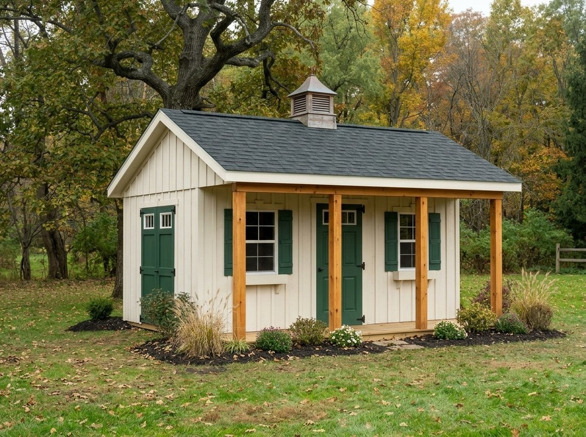
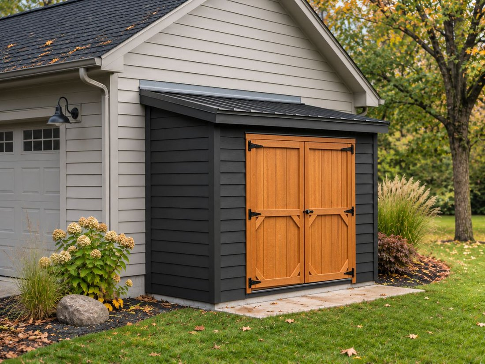
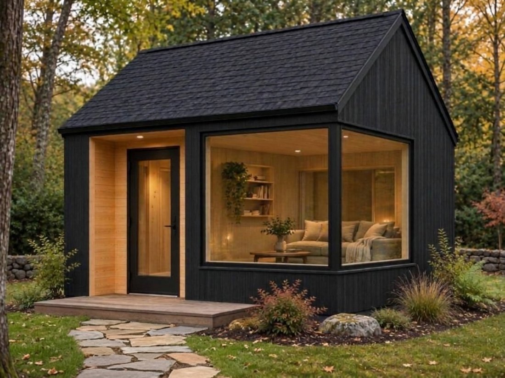
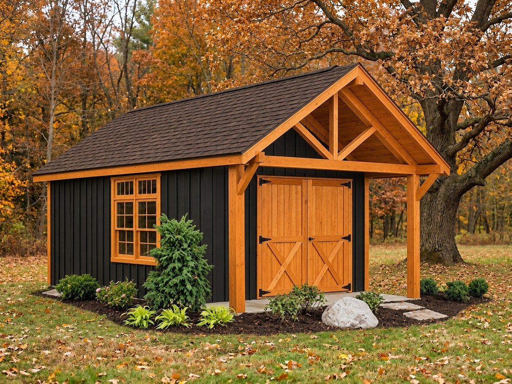
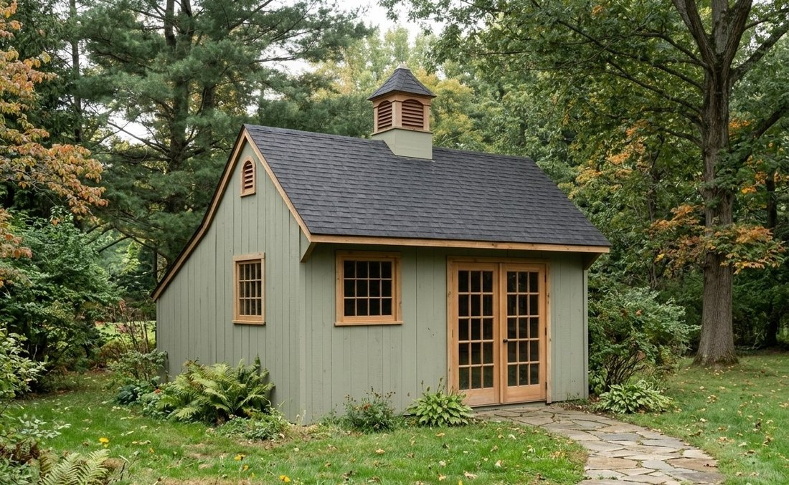

Traditional 5/12 gable
The Carriage Lane
A classic gable-roof design with timeless Craftsman detailing.
See Your PriceExplore our collection of distinctive backyard buildings—from traditional Appalachian cottages and classic barns to contemporary studios. Every structure is built on your property with thoughtful planning and a commitment to quality.

Architecture inspired by Appalachian tradition · Built on site in the Greater Cincinnati Tri-State area
Choose the look that feels right for your property. Each model has its own pricing page, available sizes, siding choices, and exterior gallery. Compare the architecture here, then explore the details that matter to you.
Showing all 12 building models
A classic gable-roof design with timeless Craftsman detailing.
See Your PriceA welcoming cottage silhouette distinguished by its shed dormer.
See Your Price
Clean lines and a modern single-slope roof for today’s backyards.
See Your Price
Farmhouse-inspired proportions and an elegant steeper roofline.
See Your Price
A versatile Appalachian-inspired building with classic gable architecture.
See Your Price
A streamlined lean-to profile, available attached or stand-alone.
See Your Price
Distinctive Scandinavian-inspired architecture with generous corner glazing.
See Your Price
A steep-roof cottage with warm, traditional architectural character.
See Your Price
A commanding roofline with traditional depot-inspired detailing.
See Your Price
An Appalachian gambrel-roof design with enduring barn character.
See Your Price
An unmistakable asymmetrical roofline drawn from historic saltbox forms.
See Your Price
Purpose-built, open-sided firewood storage with classic gable styling.
See Your PriceStrong foundation support, thoughtful framing and proper weather protection matter as much as a beautiful exterior. Explore the details that make an Appalachian Sheds building different.
Explore Our ConstructionBrowse models and pricing, then request a written proposal or property walk-through through the appropriate model page.
View Models & Pricing